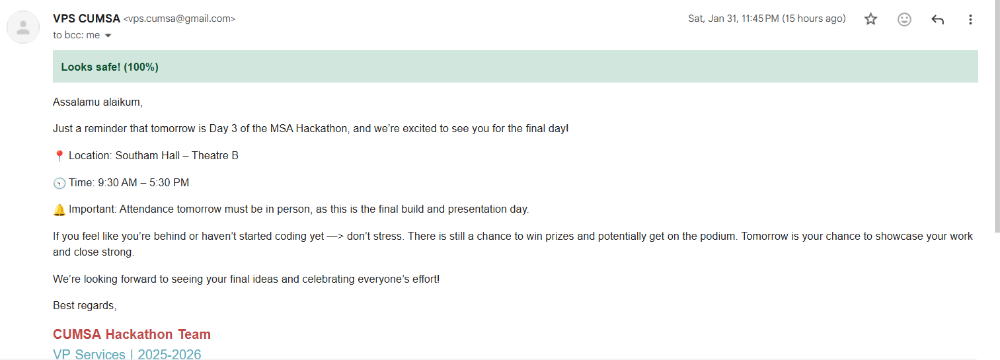

Mochadoro
Une application de productivité pour ordinateur, synchronisée avec du matériel Arduino par UART en moins de 50 ms. J'ai conçu et programmé toute l'interface et écrit le micrologiciel en C++.
HTML/CSS/JS Electron C++
Mochadoro sur GitHubÉtudiante en génie des systèmes informatiques à l'Université Carleton
Étudiante en génie des systèmes informatiques à l'Université Carleton. Je travaille sur toute la chaîne, des interfaces utilisateur en HTML, CSS et JavaScript jusqu'au micrologiciel en C++ et au Verilog sur FPGA, et j'accorde autant d'importance aux tests et au débogage qu'à la conception. Bilingue (anglais/français) et à la recherche d'un stage coop pour l'hiver 2027, peu importe la durée.
Une application de productivité pour ordinateur, synchronisée avec du matériel Arduino par UART en moins de 50 ms. J'ai conçu et programmé toute l'interface et écrit le micrologiciel en C++.
HTML/CSS/JS Electron C++
Mochadoro sur GitHub
Une extension Chrome qui signale les courriels d'hameçonnage suspects directement dans Gmail. Réalisée en équipe lors d'un hackathon : j'ai conçu l'extension et les tests automatisés (pytest et Jest, avec un seuil de précision de 95 %) qui s'exécutent dans GitHub Actions à chaque modification.
JavaScript Extension Chrome Python pytest / Jest GitHub Actions
ScamFree sur GitHubUn décodeur de code Morse conçu en Verilog sur une carte FPGA PYNQ-Z2. Il utilise un synchroniseur et une machine à états à quatre états pour lire les pressions de bouton de façon fiable malgré les variations de synchronisation. Quand la machine à états fonctionnait mal pendant les tests, j'ai trouvé le problème en affichant ses états sur les DEL de la carte, puis je l'ai corrigé avec un conditionnement des impulsions. (En cours)
Verilog Vivado FPGA (PYNQ-Z2)
Décodeur de code Morse sur GitHub